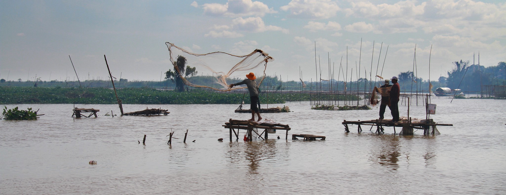
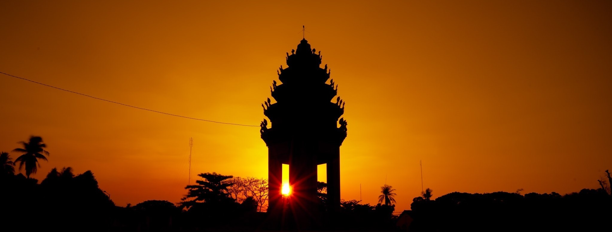

~ POTTERY ~
A Town Where Its Name Literaly Means Port of Porttery
Kampong Chhnang, with direct translation to English, it becomes port of pottery, and it isn't further from the truth. This town used to be one of the biggest pottery production in the country. Many major pottery businesses occurred here. With TonleSap river flows across the town, transportation of pottery products was mainly done through the river, so come the name, port of pottery. Nowadays, there aren't many pottery productions anymore, however, pottery is still known as one of its symbols.

~ PRAHOK ~
A Town Known For Its Prahok
The town has TonleSap river flow across it. Like a bloodline that provides oxygen, the river provides abundant fish to the people in the town. This allows the people to create the national delicacy, Prahok. Because the town is also closed to TonleSab lake, one of the biggest fish stocks in the world, the people are able to procure high-quality fish which in turn produce some of the highest quality Prohok in the country. There is a saying "It doesn't seem right to come to Kampong Chhnang and doesn't leave with a jar of Prahok".
